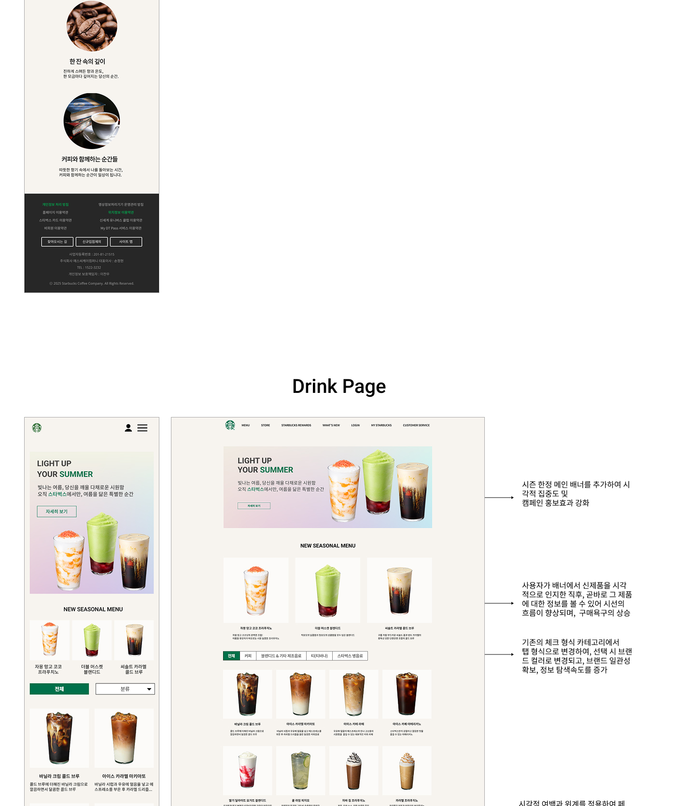
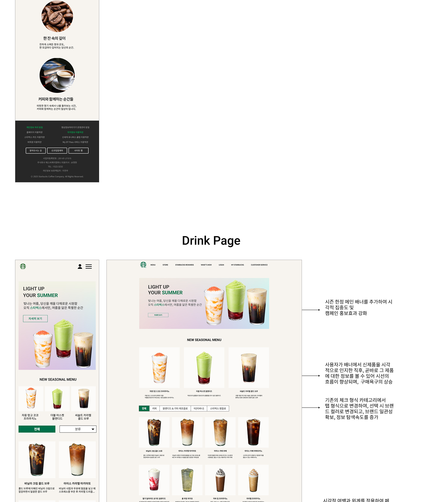

여정을 통해,
스탬프를 남기는 디자이너 강상원입니다.
제가 걸어온 디자인을 향한 여정은 한 장 한장의 우표처럼 쌓여,
도전과 배움의 기록이 되었고, 그 위에 저 만의 ‘완성’스탬프를 남겼습니다.
사용자를 향한 메세지를 트랜드와 독창적인 시각으로 재해석하여
오래 기억될 수 있는 디자인을 추구하며, 소통이라는 연결고리를 통해
더 많은 배움과 성장을 향해 노력하는 디자이너가 되겠습니다.
상세페이지

손수 떡케이크
토스칸내츄럴 사료

실리콘 무드등

비츠 조명
배너 디자인
정관장 몰

신세계V

반응형 웹디자인

스타벅스
닥터뷰 치과
손수 떡케이크
손수 떡케이크 상세페이지는 감성적인 카피와 고급스러운 비주얼로 특별한 순간을
선물하는 가치를 담았습니다. 원재료와 후기 등의 정보를 통해 신뢰를 전달하고,
주문 절차와 사이즈 안내를 직관적으로 디자인하여 사용자가 쉽고 편리하게 구매할 수 있도록 구성했습니다.


토스칸내츄럴 사료
포인트 컬러로 청록색을 활용해 자연 친화적인 이미지를 강조하며 신뢰감을
전달했습니다. 프리미엄 원재료와 6가지 주재료를 시각적으로 표현해 사용자의
이해를 높였고, 알러지 케어에 효과적인 특수 처방으로 차별성을 부각했습니다.
권장 급여량, 사료교체방법을 인포그래픽으로 구성해 정보전달력을 강화했습니다.


실리콘 무드등
캐릭터 무드등 특유의 따뜻하고 귀여운 감성을 담아 다양한 사용 상황을 제안하고,
캐릭터 구성·색상 변화·밝기 조절·리모컨 기능 등 제품의 특성을 직관적으로
전달했습니다. 감성적인 비주얼과 실용적인 정보 제공을 균형 있게 담아내어,
즐거움과 편리함을 동시에 어필하는 디자인으로 완성하였습니다.


비츠 조명
모던한 인테리어와 잘 어울리는 제품 이미지를 중심으로, 공간 연출 예시와 구매
후기까지 담아 신뢰감을 높였습니다. 제품 타입, 색상, 전구 옵션 등 선택 요소를
직관적으로 안내하고, 상세 스펙 및 정보를 명확히 제시하여 사용자가
비교·구매할 수 있도록 디자인하였습니다.


 
